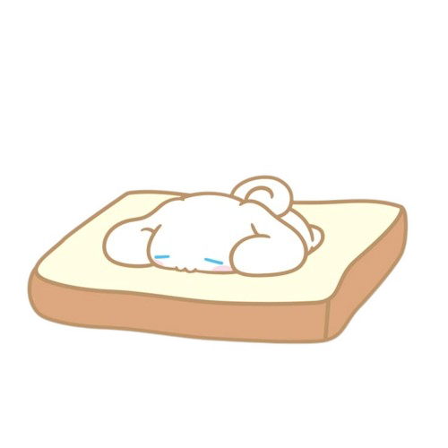
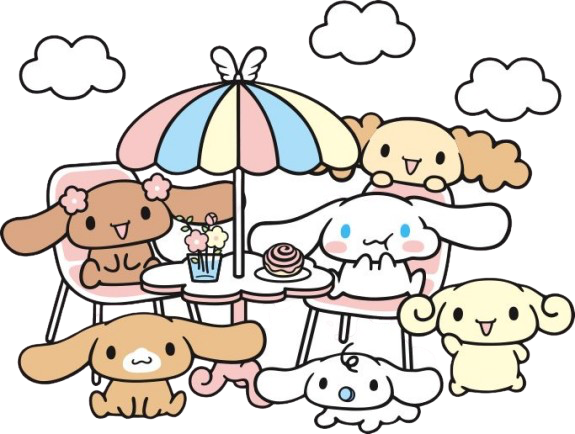
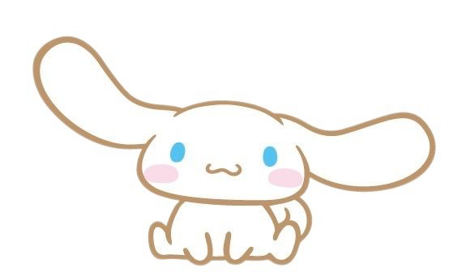
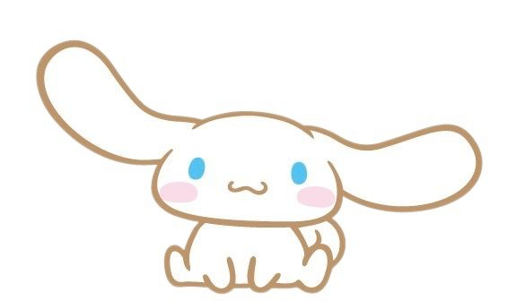

✨ Meet Cinnamoroll, the cutest puppy from the Sanrio family! ✨
Cinnamoroll is one of the most well-liked characters from Sanrio, the same company that produces Hello Kitty. It is a very adorable puppy with
long ears that can make him fly, blue eyes, pink cheeks, and a curly tail that resembles the shape of a cinnamon roll.
Debut: 2001. Designed by Sanrio designer Miyuki Okumura.
Japanese Name: シナモロール (Shinamorōru)
Birthday: March 6
Gender: Male
Species: Puppy, although he is often confused for a rabbit due to the shape of his ears.
Character Description: He is shy, friendly, and always kind to everyone.
Works at: Cafe Cinnamon, where he was found by the owner floating down from the sky.
Friends: He has a group of friends known as the Cinnamoangels (like Mocha, Chiffon, Milk, Espresso, and Cappuccino).
Popularity: Particularly popular within Japan, Cinnamoroll continues to rank quite highly in Sanrio character popularity contests.
Origin Story: One day, the owner of a café saw a white puppy floating from heaven like a fluffy cloud.
He descended to the mouth-watering scent of freshly baked cinnamon rolls, and the owner decided to name him Cinnamoroll.
He now helps out at Café Cinnamon, where he is often found taking naps on customers' laps.

Appearance
Shy and quiet but very sweet and loyal
Loves to nap, eat, and hang out with his friends
Often takes care of his younger friend Milk
Personality
Shy and quiet but very sweet and loyal
Loves to nap, eat, and hang out with his friends
Often takes care of his younger friend Milk
Fun Facts
His flying ears are one of his most magical and iconic traits.
He loves hot milk and cinnamon rolls.
He’s extremely beloved by both kids and adult collectors.
✨ Café Cinnamon Crew (Friends)! ✨

Cinnamoroll is part of a group of dog characters who also hang out at the café
Milk (Japanese: ミルク (Miruku)): A baby boy puppy who adores Cinnamoroll and follows him everywhere. He drinks from a milk bottle and wears a blue pacifier.
Mocha (Japanese: モカ (Moka)): A stylish and confident girl puppy. She's the "big sister" type and leader of the Cinnamoangels, a trio of girl characters. Loves fashion and gossip.
Chiffon (Japanese: シフォン (Shifon)): A sporty and energetic girl puppy. She's athletic, competitive, and always full of energy. She’s part of the Cinnamoangels.
Espresso (Japanese: エスプレッソ (Esupuresso)): A refined and intelligent boy puppy. He wears glasses and comes from a wealthy family. Often a bit boastful but well-meaning.
Cappuccino (Japanese: カプチーノ (Kapuchīno)): A chubby and laid-back boy puppy who loves to eat and sleep. He’s very gentle and easygoing.
Azuki (Japanese: あずき (Azuki)): A newer addition to the CinnamoFriends. She's sweet and quiet with an admiration for traditional Japanese things.
Corne (aka Cornet)(Japanese: コルネ (Korune)): A lesser-known character who appears in some newer Cinnamoroll media. Very kind and slightly shy.
Shirotaro (Japanese: シロ太郎, Shirotarō): A charming Sanrio character from the Cinnamoroll universe. He is depicted as a small white cat who resides in the Shirokedo Bookstore on Wasambon Street. Shirotaro is often seen strolling through the garden of Café Cinnamon, making him a familiar presence among Cinnamoroll and his friends.
When Cinnamoroll first encountered him, he affectionately nicknamed him "Cotton." However, it was later revealed by Azuki that his actual name is Shirotaro.
 
